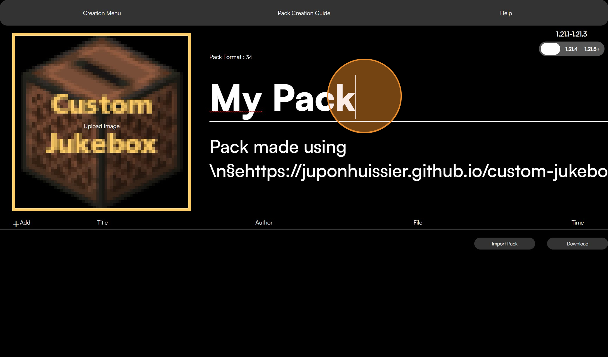
Think of a pack name and set it
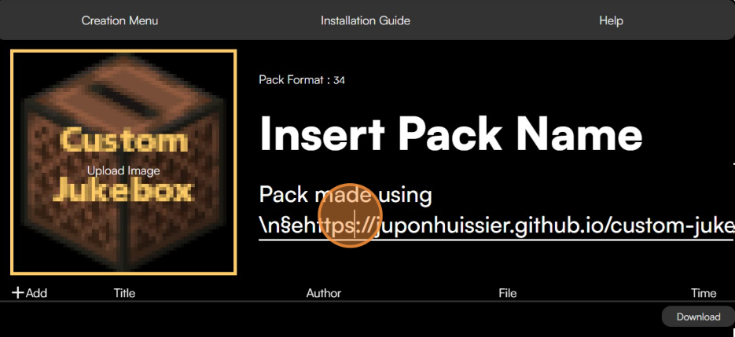
Put a description for your pack to help the people using
You may leave the default
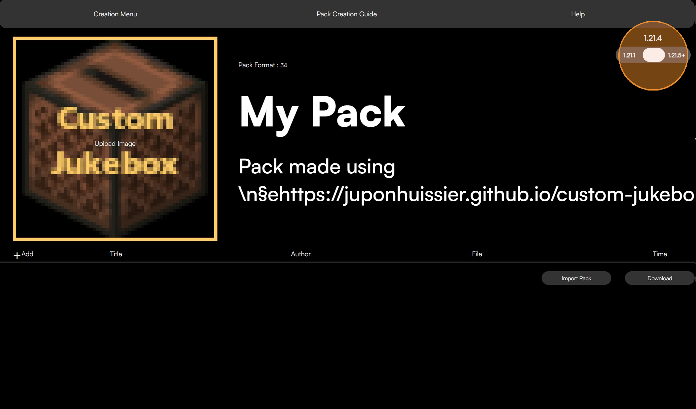
Select your minecraft version
1.21.6 and 1.21.7 are included with 1.21.5
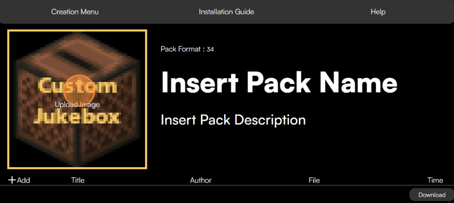
You can set an icon for you pack here
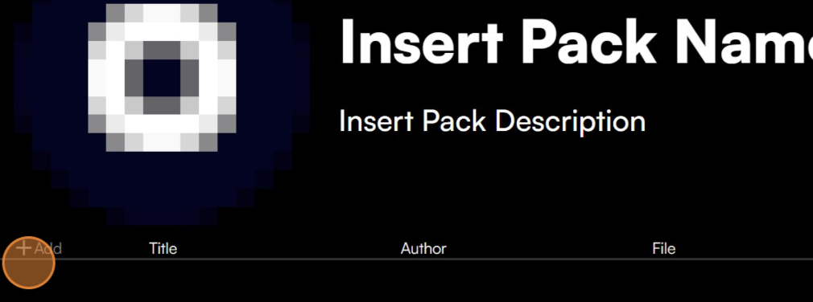
Use the +Add Button to add a disc
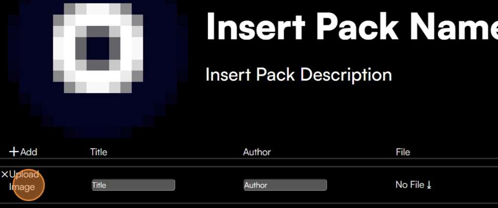
Only in 1.21.4+
Clicker on the "Upload Image Square" to put a custom texture for you disc here
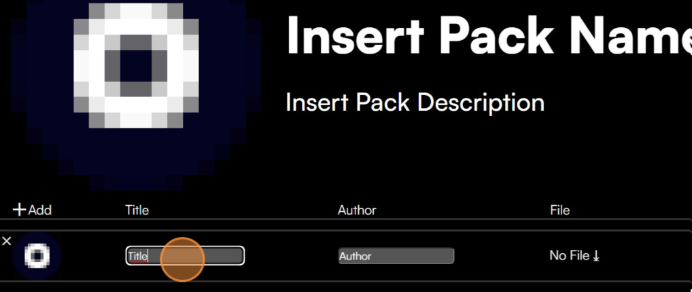
Put the name of your song here
Do the same for the your song's author
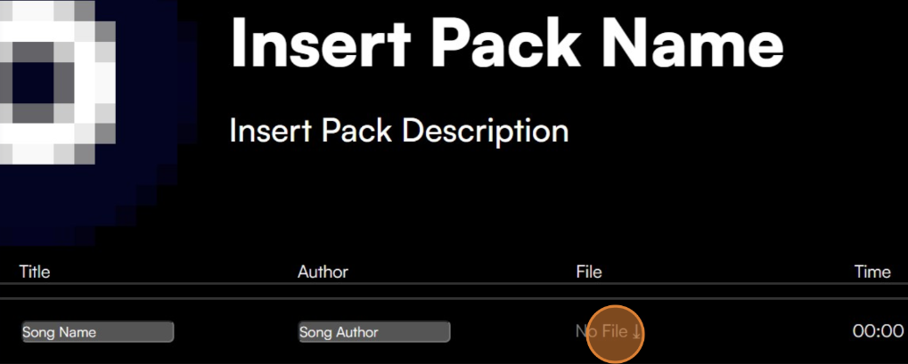
Verify your song file is a .ogg format and is mono. Otherwise the disc may not work.
Click on the "No File ⤓" to set upload the song
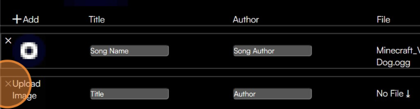
If you added a disc, you may need to delete it by clicking on the "⨉"
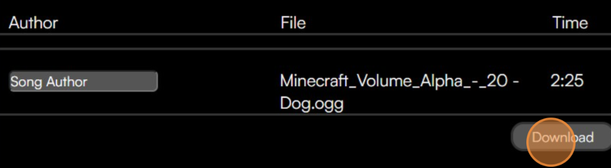
Download The Pack
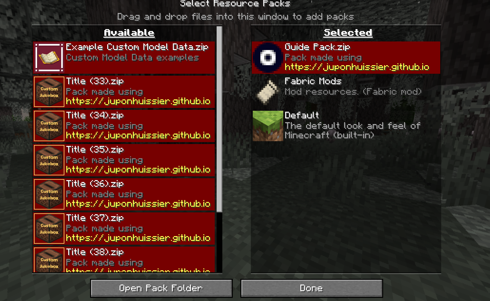
The downloaded pack is a resource pack and a datapack at the same time
Enable it as a resource pack
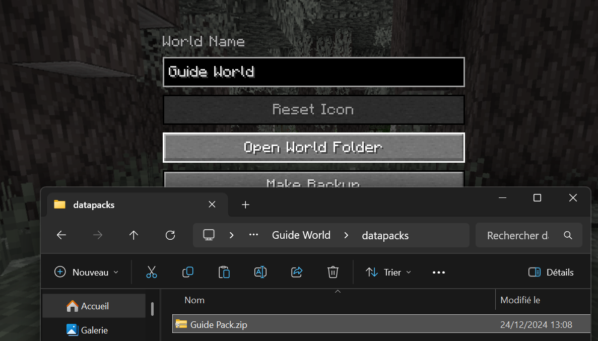
The downloaded pack is a resource pack and a datapack at the same time
Put the pack in your world > datapacks folder
Enable it as a datapack
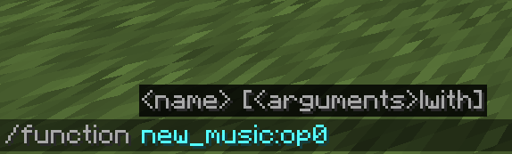
Play on your world
Type /function new_music:[name_of_your_song]
You may use auto-complete with tab and arrow keys
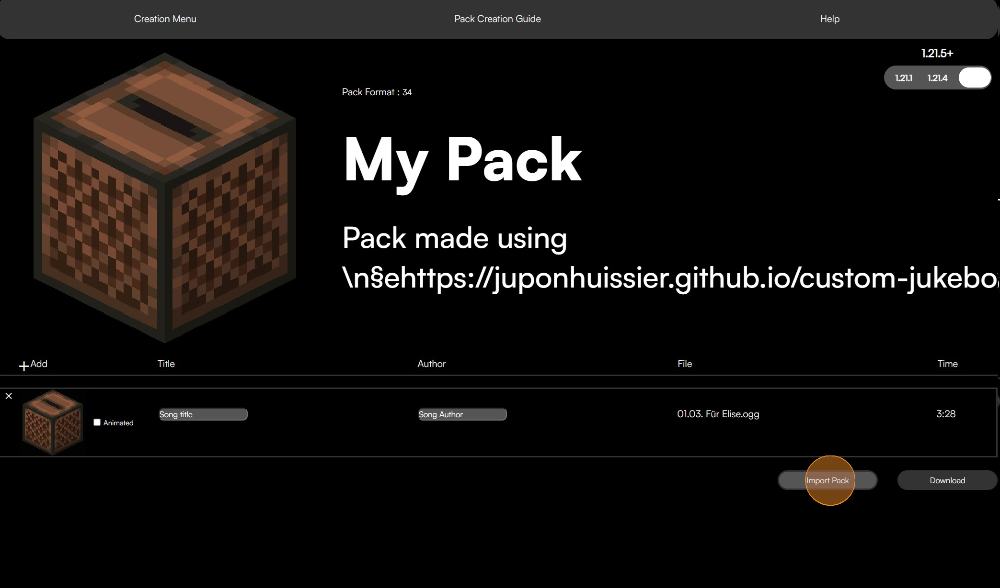
Click on the "Import Pack" button
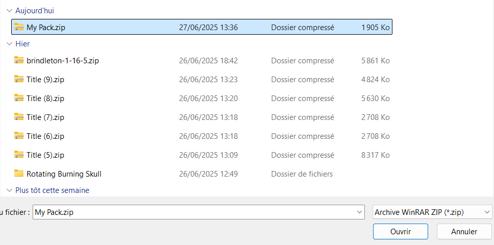
Select the pack you want to import
It will only work with the pack made using the latest version of the website
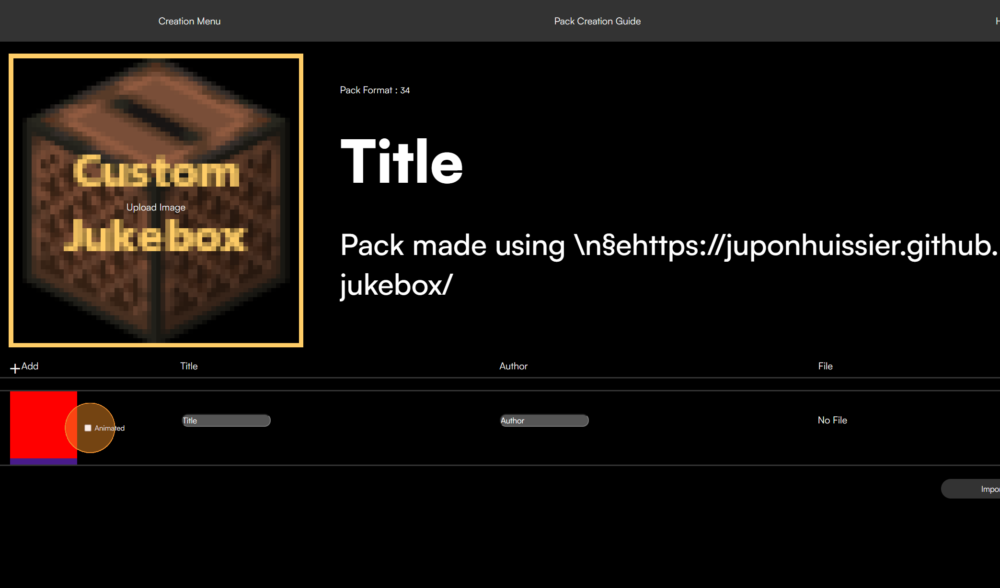
Check the "Animated Textures" box
It will allow you to use animated textures for your discs
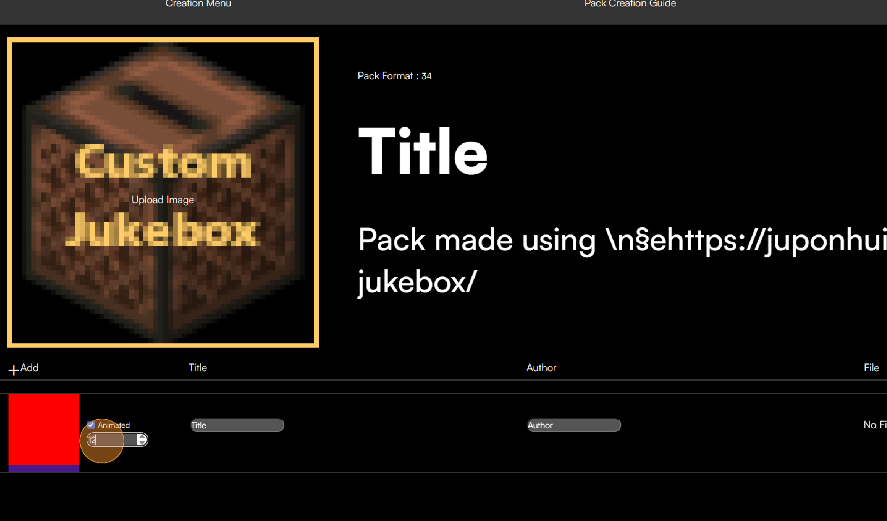
Set a frametime for your animation
It will be the speed of your animation
The lower the frametime, the faster the animation